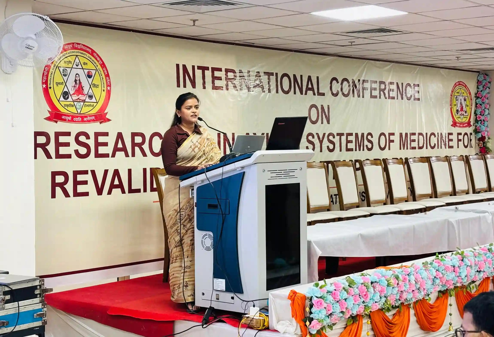

<script type="application/ld+json">
{
  "@context": "https://schema.org",
  "@graph": [
    {
      "@type": "Organization",
      "@id": "https://onlineyogaclass.in/#organization",
      "name": "Shringarika Mishra - Clinical Yoga",
      "url": "https://onlineyogaclass.in",
      "logo": "https://onlineyogaclass.in/images/logo.webp"
    },
    {
      "@type": "Person",
      "@id": "https://onlineyogaclass.in/#shringarika",
      "name": "Shringarika Mishra",
      "jobTitle": "Clinical Yoga Specialist & Research Scholar",
      "image": "https://onlineyogaclass.in/images/shringarika.webp",
      "sameAs": [
        "https://scholar.google.com/citations?user=FAp2CnkAAAAJ",
        "https://www.researchgate.net/profile/Shringarika-Mishra",
        "https://in.linkedin.com/in/shringarika-mishra-400607224"
      ]
    },
    {
      "@type": "BlogPosting",
      "@id": "https://onlineyogaclass.in/blogs/natural-metformin-the-clinical-efficacy-of-ayurvedic-cinnamon-water-in-reversing-insulin-resistance.html#article",
      "isPartOf": {
        "@id": "https://onlineyogaclass.in/blogs/natural-metformin-the-clinical-efficacy-of-ayurvedic-cinnamon-water-in-reversing-insulin-resistance.html"
      },
      "headline": "Natural Metformin: The Clinical Efficacy of Ayurvedic 'Cinnamon Water' in Reversing Insulin Resistance",
      "description": "In the management of PCOS and Type 2 Diabetes, Insulin Resistance acts as the primary barrier to hormonal equilibrium. While pharmaceutical interventions are common, Ayurvedic phytotherapy offers a potent "Natural Metformin" in the form of Cinnamomum cassia. At BHU, our research into Restorative Endocrinology reveals that the active compounds in Cinnamon—specifically cinnamaldehyde—mimic the action of insulin, increasing glucose uptake by the cells. However, the "secret" lies not just in the herb, but in the Clinical Preparation of the water to ensure maximum bioavailability without hepatic strain.",
      "image": "https://onlineyogaclass.in/images/stress.webp",
      "author": {
        "@id": "https://onlineyogaclass.in/#shringarika"
      },
      "publisher": {
        "@id": "https://onlineyogaclass.in/#organization"
      },
      "mainEntityOfPage": "https://onlineyogaclass.in/blogs/natural-metformin-the-clinical-efficacy-of-ayurvedic-cinnamon-water-in-reversing-insulin-resistance.html"
    },
    {
      "@type": "BreadcrumbList",
      "@id": "https://onlineyogaclass.in/blogs/natural-metformin-the-clinical-efficacy-of-ayurvedic-cinnamon-water-in-reversing-insulin-resistance.html#breadcrumb",
      "itemListElement": [
        {
          "@type": "ListItem",
          "position": 1,
          "name": "Home",
          "item": "https://onlineyogaclass.in/"
        },
        {
          "@type": "ListItem",
          "position": 2,
          "name": "Clinical Blogs",
          "item": "https://onlineyogaclass.in/blogs.html"
        },
        {
          "@type": "ListItem",
          "position": 3,
          "name": "Natural Metformin: The Clinical Efficacy of Ayurvedic 'Cinnamon Water' in Reversing Insulin Resistance",
          "item": "https://onlineyogaclass.in/blogs/natural-metformin-the-clinical-efficacy-of-ayurvedic-cinnamon-water-in-reversing-insulin-resistance.html"
        }
      ]
    }
  ]
}
</script>

<main class="relative z-10 max-w-5xl mx-auto px-4 sm:px-6 lg:px-8 pt-32 pb-24">
    <div class="mb-10 max-w-3xl mx-auto rounded-[2.5rem] overflow-hidden bg-slate-50 border border-pink-50 shadow-md">
        
    </div>

    <div class="article-card bg-white border border-gray-100 rounded-[2.5rem] p-8 md:p-12 shadow-sm transition">
        <script type="application/ld+json">
    {
      "@context": "https://schema.org",
      "@type": "BlogPosting",
      "headline": "The Ayurvedic Secret to Cinnamon Water for Glucose Control: A Clinical Study",
      "description": "Scientific exploration of Cinnamomum cassia and its role as a natural insulin sensitizer. Learn the clinical preparation of Cinnamon water for PCOS and Diabetes.",
      "keywords": "Clinical Yoga in Varanasi, BHU Yoga Specialist, cinnamon water for blood sugar, natural insulin sensitizer, Shringarika Mishra Research, PCOS glucose management",
      "author": {
        "@type": "Person",
        "name": "Shringarika Mishra"
      }
    }
    </script>

    <span class="text-pink-600 font-bold text-xs uppercase tracking-widest">Phytochemistry &amp; Metabolic Endocrinology</span>
    <h2 class="text-3xl md:text-4xl font-bold mt-2 mb-6">Natural Metformin: The Clinical Efficacy of Ayurvedic 'Cinnamon Water' in Reversing Insulin Resistance</h2>
    
    <div class="flex flex-col md:flex-row gap-8 mb-8">
        <div class="md:w-1/3">
            
        </div>
        <div class="md:w-2/3">
            <p class="text-gray-600 text-lg leading-relaxed">
                In the management of <strong>PCOS</strong> and Type 2 Diabetes, <strong>Insulin Resistance</strong> acts as the primary barrier to hormonal equilibrium. While pharmaceutical interventions are common, Ayurvedic phytotherapy offers a potent "Natural Metformin" in the form of <strong>Cinnamomum cassia</strong>. At <strong>BHU</strong>, our research into <strong>Restorative Endocrinology</strong> reveals that the active compounds in Cinnamon—specifically cinnamaldehyde—mimic the action of insulin, increasing glucose uptake by the cells. However, the "secret" lies not just in the herb, but in the <strong>Clinical Preparation</strong> of the water to ensure maximum bioavailability without hepatic strain.
            </p>
        </div>
    </div>
    
    <div class="full-content text-gray-700 space-y-8 leading-relaxed border-t border-gray-50 pt-8">
        
        <section>
            <h3 class="text-2xl font-bold text-gray-900 mb-3">The Pathology of 'Glucose Spiking' in PCOS</h3>
            <p>
                From a neuro-anatomical perspective, high circulating insulin disrupts the <strong>Hypothalamic-Pituitary-Ovarian (HPO) axis</strong>, leading to excessive androgen production. This "metabolic noise" prevents the dominant follicle from maturing. 
            </p>
            
            <p>
                According to reports by the <strong>World Health Organization (WHO)</strong>, traditional spices are essential components of integrative metabolic care. The implication is that Cinnamon water acts as a "Biological Buffer." By slowing the rate at which carbohydrates are broken down in the digestive tract, it prevents the post-prandial insulin surge that damages <strong>Beeja</strong> (egg) quality. In our <strong>Varanasi Clinical Yoga</strong> programs, we use this as a daily "Metabolic Agni" primer.
            </p>
            <div class="my-6">
                
            </div>
        </section>

        <section class="bg-pink-50 p-8 rounded-3xl border-l-8 border-pink-400">
            <h3 class="text-xl font-bold text-pink-800 mb-4">Interesting Fact: The Ceylon vs. Cassia Distinction</h3>
            <p class="text-sm italic mb-4">
                Did you know that not all cinnamon is created equal? While <strong>Cassia</strong> is more effective for glucose control, it contains higher levels of coumarin. Clinical research suggests that for long-term use, <strong>Ceylon Cinnamon</strong> (True Cinnamon) is the safer choice to prevent liver stress while still providing the necessary insulin-sensitizing benefits.
            </p>
        </section>

        <section>
            <h3 class="text-2xl font-bold text-gray-900 mb-3">The Clinical Preparation Protocol</h3>
            <p>At <strong>onlineyogaclass.in</strong>, we advise against boiling cinnamon, as high heat can degrade the essential oils. Follow this Ayurvedic cold-infusion method:</p>
            
            <div class="space-y-6 mt-4">
                <div class="border border-pink-100 p-5 rounded-2xl bg-white shadow-sm">
                    <h4 class="font-bold text-gray-900 mb-2"><i class="fas fa-tint text-pink-400 mr-2"></i>1. The Overnight Infusion</h4>
                    <p class="text-sm">Place one 2-inch stick of Ceylon cinnamon in a glass of room-temperature water. Let it sit overnight. This slow extraction preserves the <strong>volatiles</strong> that regulate the <strong>NEI axis</strong>.</p>
                </div>
                <div class="my-6">
                    
                </div>
                <div class="border border-pink-100 p-5 rounded-2xl bg-white shadow-sm">
                    <h4 class="font-bold text-gray-900 mb-2"><i class="fas fa-sun text-pink-400 mr-2"></i>2. The Dawn Dosage</h4>
                    <p class="text-sm">Drink this water on an empty stomach to clear the <strong>Dawn Phenomenon</strong> spike. This prepares your cells for breakfast, ensuring that your <strong>Insulin Sensitivity</strong> remains high throughout the day.</p>
                </div>
            </div>
        </section>

        <section>
            <h3 class="text-2xl font-bold text-gray-900 mb-3">Biological Levers: Cinnamon and Yoga Synergy</h3>
            <p>
                As a <strong>Gold Medalist (University of Patanjali)</strong> and <strong>Research Scholar at BHU</strong>, I advocate for <strong>Biological Scaling</strong>. Cinnamon water provides the chemical signal, but <strong>Clinical Yoga</strong> (specifically <i>Surya Namaskar</i>) provides the mechanical "push" to drive glucose into the muscles. This evidence-based approach is why our students report not only a significant drop in their HbA1c but a profound restoration of their <strong>Lunar Rhythm</strong> and fertility.
            </p>
        </section>

        <div class="border-t border-gray-100 pt-8 mt-8">
            <div class="bg-gray-900 text-white p-8 rounded-[2rem] shadow-2xl relative overflow-hidden">
                <div class="flex flex-col md:flex-row items-center gap-8 relative z-10">
                    
                    <div>
                        <h4 class="text-2xl font-bold mb-2">About Shringarika Mishra</h4>
                        <p class="text-sm text-gray-300 leading-relaxed">
                            Gold Medalist (University of Patanjali) &amp; NET JRF (AIR 2). Research Scholar at <strong>Banaras Hindu University (BHU)</strong> specializing in Clinical Yoga for Infertility and PCOS. With 11+ years of experience, she provides evidence-based healing through <strong>onlineyogaclass.in</strong>.
                        </p>
                        <div class="flex gap-4 mt-4">
                            <a href="https://www.researchgate.net/profile/Shringarika-Mishra" target="_blank" class="text-xs text-blue-400 font-bold hover:underline"><i class="fab fa-researchgate mr-1"></i> ResearchGate</a>
                            <a href="https://scholar.google.com/citations?user=FAp2CnkAAAAJ&amp;hl=en" target="_blank" class="text-xs text-red-400 font-bold hover:underline"><i class="fab fa-google mr-1"></i> Google Scholar</a>
                        </div>
                    </div>
                </div>
                
                <div class="mt-10 flex flex-col md:flex-row justify-center gap-4">
                    <a href="../../programs/pcos/" class="bg-pink-600 text-white px-10 py-4 rounded-full font-bold hover:bg-pink-700 transition shadow-lg text-center text-lg">
                        Join the Metabolic Recovery Batch
                    </a>
                    <a href="https://wa.me/919559827280" class="border-2 border-green-500 text-green-500 px-10 py-4 rounded-full font-bold hover:bg-green-50 transition text-center text-lg">
                        <i class="fab fa-whatsapp mr-2"></i> Free Clinical Consultation
                    </a>
                </div>
            </div>
        </div>

        <p class="text-[10px] text-gray-400 mt-12 text-center leading-relaxed italic">
            <strong>Medical Disclaimer:</strong> The clinical information and research-based insights provided in this article are for educational purposes based on research conducted at BHU. This is not a substitute for professional medical advice, diagnosis, or treatment. Cinnamon can lower blood sugar significantly; always consult with your endocrinologist or a Clinical Yoga Specialist before starting this protocol, especially if you are on glucose-lowering medications like Metformin.
        </p>
    </div>
        
        
                    <div class="mt-12 pt-8 border-t border-slate-100 text-left">
                        <h4 class="text-xl font-black text-slate-900 tracking-tight mb-4 flex items-center gap-2">
                            <span class="w-1 h-6 bg-pink-500 rounded-full"></span> Read More Clinical Insights
                        </h4>
                        <ul class="space-y-3 font-semibold text-pink-600 text-sm md:text-base">
                            <li>
                                <a href="retinal-resilience-utilizing-clinical-eye-yoga-to-mitigate-micro-vascular-damage-in-diabetes.html" class="hover:text-pink-700 hover:underline transition flex items-center gap-2">
                                    <i class="fas fa-book-open text-xs text-pink-400"></i> Retinal Resilience: Utilizing Clinical 'Eye Yoga' to Mitigate Micro-Vascular Damage in Diabetes
                                </a>
                            </li>
                            <li>
                                <a href="the-cellular-shake-why-hyperthyroid-anxiety-is-a-physiological-hijack-rather-than-mental-stress.html" class="hover:text-pink-700 hover:underline transition flex items-center gap-2">
                                    <i class="fas fa-book-open text-xs text-pink-400"></i> The Cellular Shake: Why Hyperthyroid Anxiety is a Physiological 'Hijack' Rather Than Mental Stress
                                </a>
                            </li>
                        </ul>
                    </div>
    </div>
</main>
